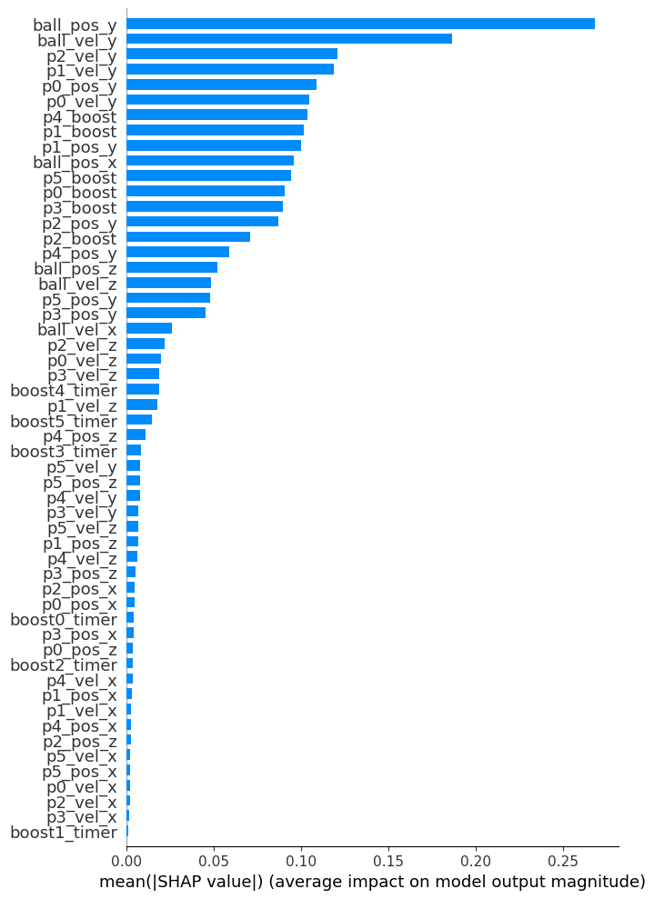
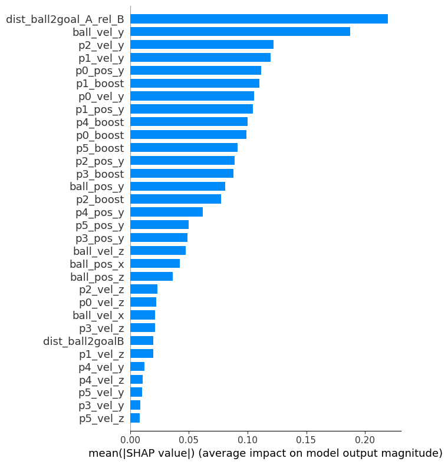
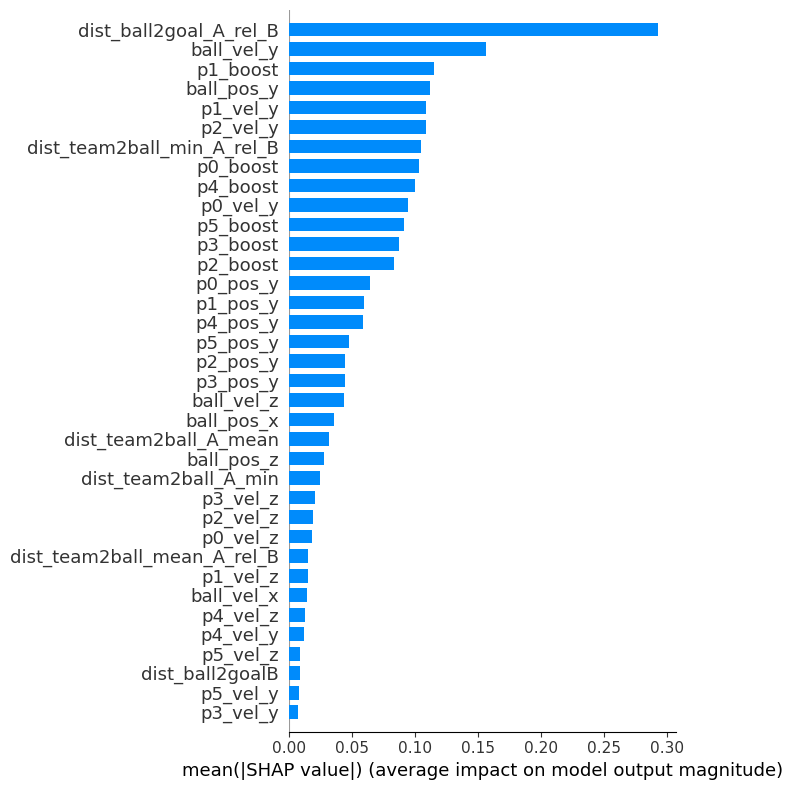
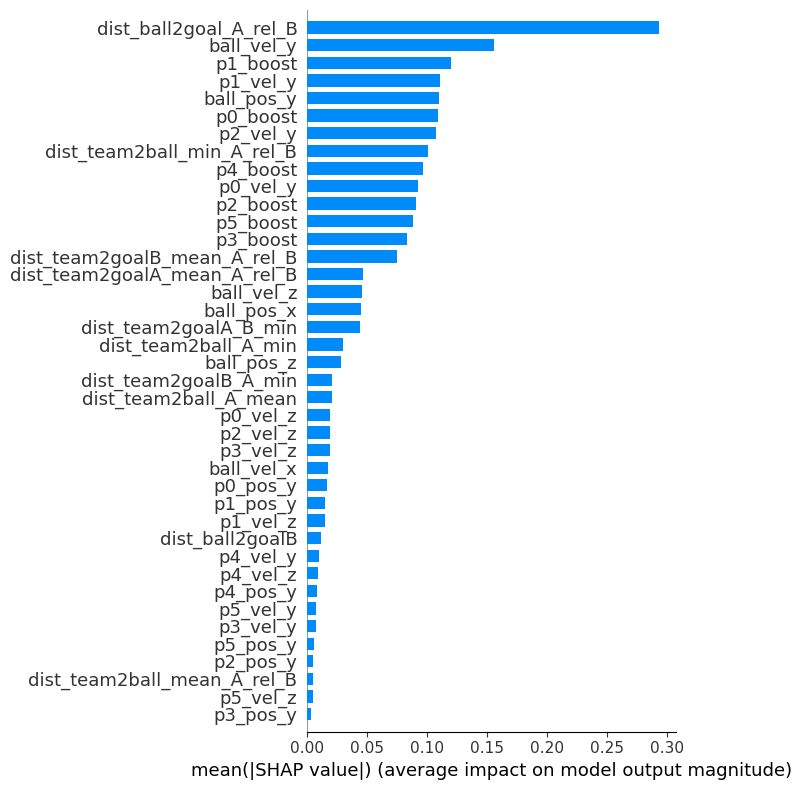
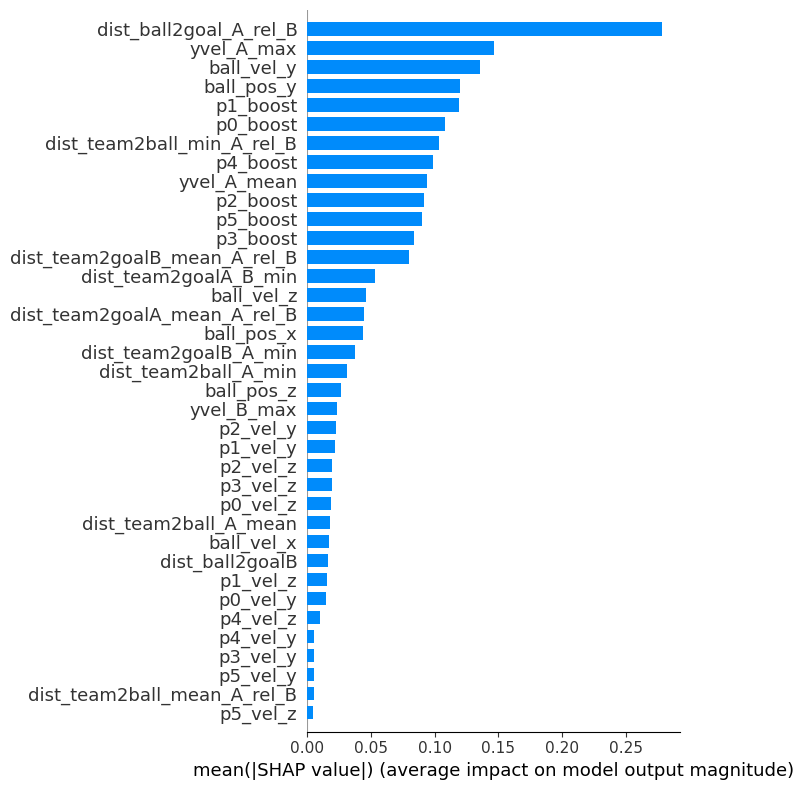
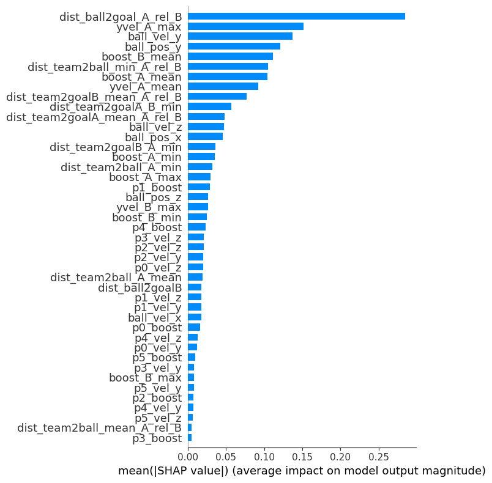

Code
import pandas as pd
import cudf
import cupy
import numpy as np
import xgboost as xgb
import shap
from sklearn.model_selection import GroupKFold
from sklearn.metrics import log_loss
from pathlib import Path
import re
import gcNovember 10, 2022
In tabular problems, feature engineering can have a huge impact, potentially separating mediocre models from fantastic models. In essence, engineering features can serve three purposes: - Increase the predictive performance and generalization of a model - Increase the interpretability of a model - Reduce the complexity of a model (memory footprint, computational requirements)
How can we come up with a great set of features? Successful feature engineering begins with a thorough understanding of the business problem that we want to solve (e.g., if the data concerns human decisions, imagine the decision process and think about each step and how they interact; what would have influenced you in your decision?) and the data we have (we already covered this in the section about EDA; what can the features tell us about the target?). Then we should ask how we can transform our data in representations that can be better exploited by our model. This is a highly creative endeavor and should be treated as such. Which features would help you if you had to make a prediction? Which features could help the model detect patterns in the data? Hold brainstorming sessions and try to get inspirations from solutions that worked well in similar problems. Also, error analysis really is very important. Sorting the observations by error and plotting the residuals for different groups in the data are common strategies for revealing relevant patterns that can lead to new ideas and directions for feature engineering.
In general, the best features will be problem-specific and therefore hard to systematize. Nonetheless, we can look at some general feature engineering techniques that can help in many problems. Depending on the problem domain (e.g., biology, finance) there may be many other common techniques.
NaN sales simply means an absence of any transactions, we can replace missing values with 0s. Note that there are cases where NaN actually is the correct value (e.g., the age of the spouse for singles).NaNs natively (like XGBoost and its relatives), this is generally the best approach. Keeping missing values allows the model to capture information that is contained in the missingness (e.g., in a dataset for tax fraud detection, missingness may not occur at random but rather tell us a lot about the target). Alternatively, try replacing NaNs with a value that is far from the other values (e.g., -999; depending on the implementation, this can result in slightly different splits).1.5 * IQR). For more sophisticated approaches see the scikit-learn guide.pandas’ cut and scikit-learn’s KBinsDiscretizer. Binning can be combined with/used for frequency encoding.rank() method in pandas) and use the ranks as a feature.scikit-learn’s StandardScaler.MinMaxScaler; an alternative to standardization for neural networks.RobustScaler which is less sensitive to outliers, as well as PowerTransformer and QuantileTransformer (which is probably a good choice when preprocessing tabular data for neural networks) which can be used to make data more Gaussian-like. See here for a comparison of different scaling methods.NaN we can use a value that is markedly different from the other values (e.g., a large negative value like -999).is_mobile, is_latest_version, operating_system, etc.OrdinalEncoder or pandas’ factorize() method). This is the default approach for tree-based models and usually works surprisingly well. An option for neural networks.OneHotEncoder. This is the default approach for linear models (where one category is usually used as a baseline). An option for neural networks.pandas’ value_counts() as a dictionary). Alternatively, try converting to ranks.Quite often we find that there is a feature that would provide a lot of signal to the model but isn’t available in the dataset. In situations like this, it may be possible to create a model that leverages the existing data and can predict the feature in question accurately enough. An example: Imagine that we want to create a model that predicts the number of clicks generated by ads for used cars. Common sense tells us that the number of clicks will depend on how the price offered in the ad compares to the typical market price of the product. Maybe we can create a model that predicts the price of the car and use the price difference as a feature?
While column-based features are probably more intuitive, it can also be beneficial to compute row-wise features to help the model find patterns in the data. Some examples are: - Compute the mean, median, standard deviation, minimum, maximum, sum, etc. of the numeric values (or a reasonable subset). - Compute an average score of how much the column values deviate from their mean or median. - Count missing values, 0s, positive/negative values, etc. - Clustering: Cluster the data (e.g., using an unsupervised algorithm like K-Means) and add the cluster labels as a feature.
Even though we hope that every newly created feature provides important information to the model, this is usually not the case. Instead we’ll often end up with many features that are not really relevant for the problem or even just introduce noise. Thus, feature selection (i.e., reducing the size of the feature set) may be necessary for several reasons: - Increase predictive performance: The impact of uninformative features on a model’s predictions generally depends on the model type. While neural networks are typically very sensitive to irrelevant features, tree-based models should be able to simply ignore them. In practice though, their performance usually suffers at least to some degree too. Thus, dropping features is often a way to get better predictions. - Easier data collection: Depending on the problem setting, good features that can be easily collected can be better than great features that are expensive to acquire. This may actually be quite important in practice. - Reduce computation/memory requirements: Reduce the size of the feature set in order to consume less memory and/or speed up training and inference. - Increase interpretability: There is a trade-off between predictive performance and model interpretability. If interpretability matters it may be our goal to find a set of interpretable features with reasonable predictive performance.
So how should we select our features? In theory, the best approach to feature selection is simple: just try out all combinations and pick the feature set that fits the requirements best. In practice, this is of course computationally infeasible. Thus, many feature selection methods have been proposed. They generally fall into three main classes: - Intrinsic/Embedded methods: Intrinsic feature selection happens implicitly when the model is fitted. Thus, they don’t require any additional tools and build on a direct link between the objective function and feature selection. A common example are regularization models like lasso regression that force some predictors to be excluded from the model. Implicit feature selection also happens in tree-based models where predictors that are not used in any split are excluded from the model. - Filter methods: Filter methods select features based on their properties (i.e., they don’t involve a model). For instance, common criteria are based on correlation with the target, mutual information or variance thresholds. The advantage of filter methods is that they are simple, fast and easily understandable. - Wrapper methods: Wrapper methods iteratively fit a model to a feature subset and use the resulting model performance to select the subset for the next iteration. They have the best chance of finding the most predictive features, but are computationally demanding (and in some cases simply infeasible). Common wrapper methods are: - Recursive feature elimination (RFE): Create an initial model using all available features. Eliminate the least important features (e.g., features with the smallest coefficients when using a linear model). Fit the model on the reduced set of features. Repeat until the desired number of features has been reached. - Sequential feature selection (SFS): - Sequential forward selection: Begin with zero features. Fit a model for each available feature. Keep the feature that resulted in the best model performance. Repeat until the desired number of features has been reached. - Sequential backward selection: Begin with all \(n\) available features. Fit a model to all subsets of size \(n-1\). Keep the feature that is associated with highest drop in performance. Repeat until the desired number of features has been reached. - Genetic algorithms: Genetic algorithms can be used effectively for feature selection. - Permutation importance: Fit a model to all features. Then, for each feature, shuffle the feature column and score the predictions of the model. The higher the drop in performance, the more important is the feature. Rank the features by their permutation importance and select the desired number of features. - SHAP: SHAP is a model-agnostic method for explaining individual predictions that has its roots in Shapley values from cooperative game theory. (See here and here for more on SHAP.) A great method for interpretable ML, it can be used effectively for computing feature importances (and thus feature selection) as well. For each feature we simply average the absolute values across the data to obtain global feature importances or we analyze a summary plot that visualizes the feature importances and effects for all instances. Note that SHAP values can be computed using GPU acceleration from inside XGBoost (just set pred_contribs=True when using model.predict()) which provides massive speed-ups. It is therefore easy to compute SHAP values as a default in a modeling pipeline. (Of course, we shouldn’t trust feature importance scores blindly because they can reflect bias in the data. In this case, it can be necessary to remove “important” features!)
Which of these methods is best suited for a given problem depends on many factors (number of features, resource constraints, etc.). However, note that the methods outlined above generally imply that feature selection is a separate step that comes after feature engineering. In practice, this may not be ideal. At least in situations when we don’t want to create large numbers of features automatically, we can proceed with feature engineering and feature selection in parallel. That is, we immediately try a newly created feature and keep it if the model improves in cross-validation. (In order to know whether the improvement is large enough, we should check the variation of the validation score between folds and/or seeds. The improvement should exceed this variation. Also, keep an eye on the train and the CV score. Adding a new feature shouldn’t widen the gap between both scores significantly; otherwise we are probably overfitting.) This approach can make feature engineering more natural (even more so if combined with analyzing SHAP values), allowing us to find suitable directions for improvement and understand the problem more thoroughly.
Let’s turn our attention to the Rocket League example. Instead of creating a large number of features and applying feature selection afterwards, we’ll stick to the iterative approach and try to engineer useful features based on an intuitive understanding of the data. In order to make the most out of GPU acceleration, we’ll use cudf and cupy for feature engineering, and xgboost for modeling and the computation of Shap values.
def run_cv(df, features, compute_shap=True):
cv = GroupKFold(n_splits=5)
oof = np.zeros(df.shape[0])
scores = []
for fold, (train_idx, valid_idx) in enumerate(cv.split(df, groups=df.game_num.to_numpy())):
dtrain = xgb.DMatrix(data=df.iloc[train_idx][features], label=df.iloc[train_idx][target])
dvalid = xgb.DMatrix(data=df.iloc[valid_idx][features], label=df.iloc[valid_idx][target])
model = xgb.train(xgb_params,
dtrain=dtrain,
evals=[(dtrain, "train"), (dvalid, "valid")],
num_boost_round=1000,
verbose_eval=1000)
if compute_shap and fold == 0:
shap_values = model.predict(dvalid, pred_contribs=True)
oof_preds = model.predict(dvalid)
oof[valid_idx] = oof_preds
score = log_loss(df.iloc[valid_idx][target].to_numpy(), oof_preds)
print(f"Fold {fold} score: {score:.5f}")
scores.append(score)
del dtrain, dvalid, model, oof_preds, score
gc.collect()
print(f"CV score: {np.mean(scores):.5f}")
return shap_valuesLet’s begin by creating a baseline XGBoost model using all original features.
[0] train-logloss:0.68522 valid-logloss:0.68526
[999] train-logloss:0.18825 valid-logloss:0.19905
Fold 0 score: 0.19905
[0] train-logloss:0.68523 valid-logloss:0.68524
[999] train-logloss:0.18886 valid-logloss:0.19658
Fold 1 score: 0.19658
[0] train-logloss:0.68524 valid-logloss:0.68522
[999] train-logloss:0.18973 valid-logloss:0.19331
Fold 2 score: 0.19331
[0] train-logloss:0.68524 valid-logloss:0.68522
[999] train-logloss:0.18995 valid-logloss:0.19237
Fold 3 score: 0.19237
[0] train-logloss:0.68524 valid-logloss:0.68523
[999] train-logloss:0.18977 valid-logloss:0.19301
Fold 4 score: 0.19301
CV score: 0.19486
Looking at the Shap values we notice two things: - The position of the ball, the direction of movement of the ball and the players, and the boost that is available to the players are the most important features. This makes intuitive sense. - At least without further feature engineering, the x and z position of the players, the players’ x velocity, and the boost timer features are not really useful for the model.
Let’s see how the model performs when we drop the least important features.
original_features = [f for f in original_features if f not in list(filter(re.compile("p[0-5]_pos_x").match, original_features))]
original_features = [f for f in original_features if f not in list(filter(re.compile("p[0-5]_pos_z").match, original_features))]
original_features = [f for f in original_features if f not in list(filter(re.compile("p[0-5]_vel_x").match, original_features))]
original_features = [f for f in original_features if "timer" not in f][0] train-logloss:0.68522 valid-logloss:0.68526
[999] train-logloss:0.18868 valid-logloss:0.19893
Fold 0 score: 0.19893
[0] train-logloss:0.68523 valid-logloss:0.68524
[999] train-logloss:0.18938 valid-logloss:0.19656
Fold 1 score: 0.19656
[0] train-logloss:0.68524 valid-logloss:0.68522
[999] train-logloss:0.19023 valid-logloss:0.19323
Fold 2 score: 0.19323
[0] train-logloss:0.68524 valid-logloss:0.68522
[999] train-logloss:0.19036 valid-logloss:0.19230
Fold 3 score: 0.19230
[0] train-logloss:0.68524 valid-logloss:0.68523
[999] train-logloss:0.19029 valid-logloss:0.19292
Fold 4 score: 0.19292
CV score: 0.19479As expected, the CV score doesn’t deteriorate (it actually improves slightly).
Let’s move on and engineer some new features. Judging from the Shap values and our understanding of the dataset, the y position of the ball is a very important feature. So let’s build on this and compute the Euclidean distance of the ball to the goal of team B as well as the relative distance:
def euclidean_dist(a, b):
return cupy.linalg.norm(a - b, axis=1)
def distance_ball_goal(df):
ball_pos = df[[f"ball_pos_{c}" for c in ["x", "y", "z"]]]
df["dist_ball2goalA"] = euclidean_dist(ball_pos.values, cupy.array([0, 100, 6])).astype("float32")
df["dist_ball2goalB"] = euclidean_dist(ball_pos.values, cupy.array([0, -100, 6])).astype("float32")
df["dist_ball2goal_A_rel_B"] = (df["dist_ball2goalA"] / df["dist_ball2goalB"]).astype("float32")
return df
def compute_features(df):
df = distance_ball_goal(df)
return df[0] train-logloss:0.68520 valid-logloss:0.68524
[999] train-logloss:0.18855 valid-logloss:0.19880
Fold 0 score: 0.19880
[0] train-logloss:0.68521 valid-logloss:0.68522
[999] train-logloss:0.18927 valid-logloss:0.19633
Fold 1 score: 0.19633
[0] train-logloss:0.68522 valid-logloss:0.68520
[999] train-logloss:0.19008 valid-logloss:0.19306
Fold 2 score: 0.19306
[0] train-logloss:0.68522 valid-logloss:0.68520
[999] train-logloss:0.19019 valid-logloss:0.19197
Fold 3 score: 0.19197
[0] train-logloss:0.68522 valid-logloss:0.68521
[999] train-logloss:0.19006 valid-logloss:0.19265
Fold 4 score: 0.19265
CV score: 0.19456
The CV score has improved (a little bit) and the relative distance is now the most important feature. Apparently, distance features can be quite useful for this dataset. What next? Intuitively, the distance of the players to the ball indicates which team is in possession. Let’s compute the minimum and mean distance for both teams as well as the corresponding relative features:
def distance_team_ball(df):
ball_pos = df[[f"ball_pos_{c}" for c in ["x", "y", "z"]]]
for p in range(6):
player_pos = df[[f"p{p}_pos_{c}" for c in ["x", "y", "z"]]]
player_pos.fillna(-10000, inplace=True)
df[f"dist_p{p}_2ball"] = euclidean_dist(player_pos.values, ball_pos.values).astype("float32")
df[f"dist_p{p}_2ball"].loc[df[f"dist_p{p}_2ball"] > 300] = np.nan
del player_pos
gc.collect()
df["dist_team2ball_A_min"] = df[[f"dist_p{p}_2ball" for p in range(3)]].min(axis=1)
df["dist_team2ball_B_min"] = df[[f"dist_p{p}_2ball" for p in range(3, 6)]].min(axis=1)
df["dist_team2ball_A_mean"] = df[[f"dist_p{p}_2ball" for p in range(3)]].mean(axis=1)
df["dist_team2ball_B_mean"] = df[[f"dist_p{p}_2ball" for p in range(3, 6)]].mean(axis=1)
df["dist_team2ball_min_A_rel_B"] = df["dist_team2ball_A_min"] / df["dist_team2ball_B_min"]
df["dist_team2ball_mean_A_rel_B"] = df["dist_team2ball_A_mean"] / df["dist_team2ball_B_mean"]
return df
def compute_features(df):
df = distance_ball_goal(df)
df = distance_team_ball(df)
return dfThe as_gpu_matrix method will be removed in a future cuDF release. Consider using `to_cupy` instead.[0] train-logloss:0.68519 valid-logloss:0.68523
[999] train-logloss:0.18780 valid-logloss:0.19810
Fold 0 score: 0.19810
[0] train-logloss:0.68520 valid-logloss:0.68521
[999] train-logloss:0.18856 valid-logloss:0.19529
Fold 1 score: 0.19529
[0] train-logloss:0.68521 valid-logloss:0.68520
[999] train-logloss:0.18940 valid-logloss:0.19226
Fold 2 score: 0.19226
[0] train-logloss:0.68521 valid-logloss:0.68520
[999] train-logloss:0.18953 valid-logloss:0.19123
Fold 3 score: 0.19123
[0] train-logloss:0.68521 valid-logloss:0.68521
[999] train-logloss:0.18940 valid-logloss:0.19202
Fold 4 score: 0.19202
CV score: 0.19378
Adding these features leads to a quite significant improvement of the CV score. Thus, it may be a good idea to add features that capture the distance of the teams to the goals as well.
def distance_team_goal(df):
for p in range(6):
player_pos = df[[f"p{p}_pos_{c}" for c in ["x", "y", "z"]]]
player_pos.fillna(-10000, inplace=True)
df[f"dist_p{p}_2goalA"] = euclidean_dist(player_pos.values, cupy.array([0, 100, 6]))
df[f"dist_p{p}_2goalB"] = euclidean_dist(player_pos.values, cupy.array([0, -100, 6]))
df[f"dist_p{p}_2goalA"].loc[df[f"dist_p{p}_2goalA"] > 300] = np.nan
df[f"dist_p{p}_2goalB"].loc[df[f"dist_p{p}_2goalB"] > 300] = np.nan
del player_pos
gc.collect()
df["dist_team2goalA_A_min"] = df[[f"dist_p{p}_2goalA" for p in range(3)]].min(axis=1)
df["dist_team2goalA_B_min"] = df[[f"dist_p{p}_2goalA" for p in range(3, 6)]].min(axis=1)
df["dist_team2goalB_A_min"] = df[[f"dist_p{p}_2goalB" for p in range(3)]].min(axis=1)
df["dist_team2goalB_B_min"] = df[[f"dist_p{p}_2goalB" for p in range(3, 6)]].min(axis=1)
df["dist_team2goalA_A_mean"] = df[[f"dist_p{p}_2goalA" for p in range(3)]].mean(axis=1)
df["dist_team2goalA_B_mean"] = df[[f"dist_p{p}_2goalA" for p in range(3, 6)]].mean(axis=1)
df["dist_team2goalB_A_mean"] = df[[f"dist_p{p}_2goalB" for p in range(3)]].mean(axis=1)
df["dist_team2goalB_B_mean"] = df[[f"dist_p{p}_2goalB" for p in range(3, 6)]].mean(axis=1)
df["dist_team2goalA_mean_A_rel_B"] = df["dist_team2goalA_A_mean"] / df["dist_team2goalA_B_mean"]
df["dist_team2goalB_mean_A_rel_B"] = df["dist_team2goalB_A_mean"] / df["dist_team2goalB_B_mean"]
return df
def compute_features(df):
df = distance_ball_goal(df)
df = distance_team_ball(df)
df = distance_team_goal(df)
return dfThe as_gpu_matrix method will be removed in a future cuDF release. Consider using `to_cupy` instead.[0] train-logloss:0.68519 valid-logloss:0.68522
[999] train-logloss:0.18732 valid-logloss:0.19742
Fold 0 score: 0.19742
[0] train-logloss:0.68520 valid-logloss:0.68521
[999] train-logloss:0.18806 valid-logloss:0.19480
Fold 1 score: 0.19480
[0] train-logloss:0.68520 valid-logloss:0.68519
[999] train-logloss:0.18888 valid-logloss:0.19158
Fold 2 score: 0.19158
[0] train-logloss:0.68521 valid-logloss:0.68519
[999] train-logloss:0.18903 valid-logloss:0.19080
Fold 3 score: 0.19080
[0] train-logloss:0.68521 valid-logloss:0.68520
[999] train-logloss:0.18898 valid-logloss:0.19146
Fold 4 score: 0.19146
CV score: 0.19321
This gives an improved CV score again. Given that we engineered many features based on the position of the players, can we now safely drop the players’ y positions?
[0] train-logloss:0.68519 valid-logloss:0.68522
[999] train-logloss:0.18747 valid-logloss:0.19738
Fold 0 score: 0.19738
[0] train-logloss:0.68520 valid-logloss:0.68521
[999] train-logloss:0.18817 valid-logloss:0.19479
Fold 1 score: 0.19479
[0] train-logloss:0.68520 valid-logloss:0.68519
[999] train-logloss:0.18907 valid-logloss:0.19160
Fold 2 score: 0.19160
[0] train-logloss:0.68521 valid-logloss:0.68519
[999] train-logloss:0.18921 valid-logloss:0.19080
Fold 3 score: 0.19080
[0] train-logloss:0.68521 valid-logloss:0.68520
[999] train-logloss:0.18913 valid-logloss:0.19146
Fold 4 score: 0.19146
CV score: 0.19321It sure looks that way.
Let’s move on. As of yet, the model doesn’t seem to use the information contained in the y velocity of the players. Do some aggregations for both teams help?
def yvel_team(df):
df["yvel_A_max"] = df[[f"p{p}_vel_y" for p in range(3)]].max(axis=1)
df["yvel_B_max"] = df[[f"p{p}_vel_y" for p in range(3, 6)]].max(axis=1)
df["yvel_A_mean"] = df[[f"p{p}_vel_y" for p in range(3)]].mean(axis=1)
return df
def compute_features(df):
df = distance_ball_goal(df)
df = distance_team_ball(df)
df = distance_team_goal(df)
df = yvel_team(df)
return dfThe as_gpu_matrix method will be removed in a future cuDF release. Consider using `to_cupy` instead.[0] train-logloss:0.68518 valid-logloss:0.68522
[999] train-logloss:0.18756 valid-logloss:0.19735
Fold 0 score: 0.19735
[0] train-logloss:0.68520 valid-logloss:0.68521
[999] train-logloss:0.18823 valid-logloss:0.19466
Fold 1 score: 0.19466
[0] train-logloss:0.68520 valid-logloss:0.68520
[999] train-logloss:0.18912 valid-logloss:0.19169
Fold 2 score: 0.19169
[0] train-logloss:0.68521 valid-logloss:0.68519
[999] train-logloss:0.18918 valid-logloss:0.19081
Fold 3 score: 0.19081
[0] train-logloss:0.68521 valid-logloss:0.68520
[999] train-logloss:0.18909 valid-logloss:0.19140
Fold 4 score: 0.19140
CV score: 0.19318
That’s another tiny improvement. Let’s try one last thing: The player’s boost appears to be very important. What about corresponding aggregate features for both teams?
def boost_team(df):
players_A = df[[f"p{p}_boost" for p in range(3)]].copy()
df["boost_A_min"] = players_A.min(axis=1)
df["boost_A_max"] = players_A.max(axis=1)
df["boost_A_mean"] = players_A.mean(axis=1)
players_B = df[[f"p{p}_boost" for p in range(3, 6)]].copy()
df["boost_B_min"] = players_B.min(axis=1)
df["boost_B_max"] = players_B.max(axis=1)
df["boost_B_mean"] = players_B.mean(axis=1)
return df
def compute_features(df):
df = distance_ball_goal(df)
df = distance_team_ball(df)
df = distance_team_goal(df)
df = yvel_team(df)
df = boost_team(df)
return dfThe as_gpu_matrix method will be removed in a future cuDF release. Consider using `to_cupy` instead.[0] train-logloss:0.68518 valid-logloss:0.68522
[999] train-logloss:0.18763 valid-logloss:0.19730
Fold 0 score: 0.19730
[0] train-logloss:0.68520 valid-logloss:0.68521
[999] train-logloss:0.18830 valid-logloss:0.19456
Fold 1 score: 0.19456
[0] train-logloss:0.68520 valid-logloss:0.68519
[999] train-logloss:0.18916 valid-logloss:0.19151
Fold 2 score: 0.19151
[0] train-logloss:0.68521 valid-logloss:0.68519
[999] train-logloss:0.18930 valid-logloss:0.19056
Fold 3 score: 0.19056
[0] train-logloss:0.68520 valid-logloss:0.68520
[999] train-logloss:0.18917 valid-logloss:0.19120
Fold 4 score: 0.19120
CV score: 0.19302
That’s yet another improvement of the CV score.
There are endless potential avenues for feature engineering left: we could add features related to missing players, try to leverage angles computed for the movement of the players and the ball in relation to each other and the goal, extrapolate the position of the ball based on its velocity vector, make more out of the boost timers (maybe link them to the position of the players), experiment with binning to see whether the high precision really is useful, etc. For the sake of brevity, though, we’ll call it a day.
In the next and final post, we’ll try to improve our model further with hyperparameter optimization.